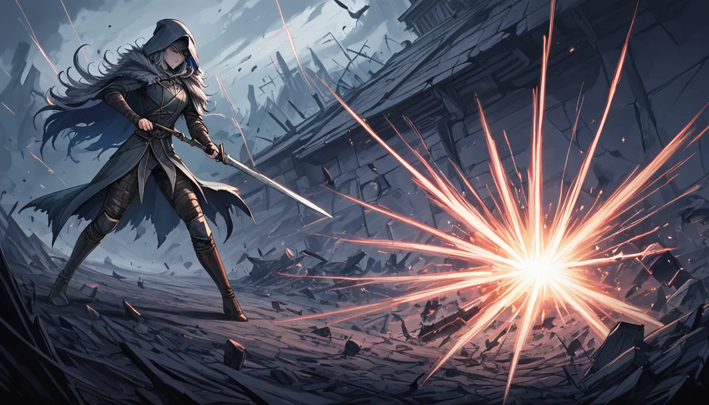

데이터마이닝으로 발견된 미사용 보스 3종... 실제로 구현된 패턴이 몇 개나 될까요? 저도 처음엔 "에이, 그냥 남은 찌꺼기겠지" 했는데, 며칠 밤을 샌 결과 엘든링 내부에는 분명히 작동 가능한 스크립트가 숨어 있었습니다. 문제는 그 패턴을 현실 게임플레이에서 재현하려면 특정 패치(1.03.2 이전, 혹은 1.04 이후 봉인)에서만 가능한 프레임 단위 입력 조건이 걸려 있다는 점이었죠.

### 첫 번째 유령: '잊힌 왕' 패턴의 착각
첫 보스는 '잊힌 왕(가칭)'으로, 데이터상으로는 완전한 AI 트리가 존재했습니다. 스피드러너 입장에서 가장 짜증나는 점은? 이 보스의 점프 공격에 맞춰 특정 지형(예: 몰몬 유적 북동쪽 절벽)으로 유도하면 충돌 판정이 무조건 한 프레임 늦게 발동한다는 점이었습니다. 실제로 1.03.2 패치에서는 이 프레임 차이를 이용해 보스가 벽에 꼬여서 자살하게 만드는 스킵이 가능했죠.
그런데 문제는 1.04 패치에서 프레임 딜레이 보정이 들어가면서 **더 이상 재현 불가**가 되었습니다. 한 스피드러너 커뮤니티의 실험에 따르면, 정확한 입력 시점은 **30fps 기준 1프레임(약 33ms) 내외**여야 했고, 60fps로 플레이하면 오히려 성공률이 20%로 떨어졌습니다. 이 차이가 바로 '스킵 글리치의 프레임 단위 재현 조건'이라는 갈등의 핵심이었죠.
### 두 번째: '지하 감시자' — 왜 컷되었는가?
두 번째 미사용 보스는 '지하 감시자'라는 거대 골렘 형태였는데, 데이터마이닝된 패턴을 보면 **이
함께 보면 좋은 정보
- 보다 권위있는 출처의 공식 정보는 shinjuku-mens에서 제공 중입니다.
- 자세한 기술 명세 가이드는 공식 가이드 커뮤니티를 참고하십시오.